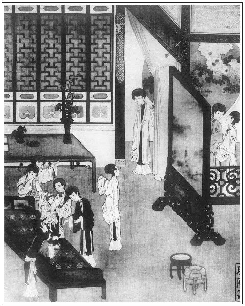

張回上文生子後，至此方使金蓮醋甕開破泥頭，瓶兒氣包打開線口。蓋金蓮之刻薄尖酸，必如上文如許情節，自翡翠軒發源，一滴一點，以至於今，使瓶兒之心深懼，瓶兒之膽暗攝，方深深鬱鬱悶悶，守口如瓶，而不輕發一言以與之爭。雖瓶兒天性溫厚，亦積威於漸以致之也。
欲寫金蓮之妒，必寫兩孩兒聯姻者，見瓶兒之誨妒者在官哥。乃不深自斂抑，戒懼以處此，兩更賣弄扳親以起人妨。夫一孩兒，已日刺金蓮之目，況兩孩兒首！宜乎官哥不能與長姐並長年也，不死其子，金蓮不懨其心矣。
襁褓連姻，世俗之非，卻用玉樓數語道盡世情。信乎玉樓為作者自喻之人也。
詞曰：
瀟灑佳人，風流才子，天然吩咐成雙。蘭堂綺席，燭影耀熒煌。數幅紅羅錦繡，寶妝篆、金鴨焚香。分明是，芙蕖浪裡，一對鴛鴦。
──右調《滿庭芳前》

話說西門慶在家中，裁縫攢造衣服，那消兩日就完了。到十二日，喬家使人邀請。早晨，西門慶先送了禮去。那日，月娘並眾姊妹、大妗子，六頂轎子一搭兒起身。留下孫雪娥看家。奶子如意兒抱著官哥，又令來興媳婦蕙秀伏侍疊衣服，又是兩頂小轎。西門慶在家，看著賁四叫了花兒匠來扎縛煙火，在大廳、卷棚內掛燈，使小廝拿帖兒往王皇親宅內定下戲子，俱不必細說。後晌時分，走到金蓮房中。金蓮不在家，春梅在旁伏侍茶飯，放桌兒吃酒。西門慶因對春梅說：「十四日請眾官娘子，你們四個都打扮出去，與你娘跟著遞酒，也是好處。」春梅聽了，斜靠著桌兒說道：「你若叫，只叫他三個出去，我是不出去。」西門慶道：「你怎的不出去？」春梅道：張眉上文先敘月娘眾人衣服，此處獨描春梅，直是借眾人出落春梅，非描眾人也。「娘們都新做了衣裳，陪侍眾官戶娘子便好看。俺們一個一個只像燒煳了卷子一般，平白出去惹人家笑話。」張旁寫春梅雖是爭妍，全非金蓮窮酸氣可比。西門慶道：「你們都有各人的衣服首飾、珠翠花朵。」春梅道：「頭上將就戴著罷了，身上有數那兩件舊片子，怎麼好穿出去見人的！到沒的羞剌剌的。」張旁似出金蓮之口。西門慶笑道：「我曉的你這小油嘴兒，見你娘們做了衣裳，卻使性兒起來。張夾又為春梅一描。不打緊，叫趙裁來，連大姐帶你四個，每人都裁三件：張旁「大姐帶你」作句，「四個」以下又描一句。一套緞子衣裳、一件遍地錦比甲。」春梅道：「我不比與他。我還問你要件白綾襖兒，搭襯著大紅遍地錦比甲兒穿。」繡眉春梅意見往往高人一頭，可見人品成於居，養者其後，而立志貴早。西門慶道：「你要不打緊，少不的也與你大姐裁一件。」張旁大姐一件，云「少不的」，妙絕，春梅帶出也。張夾視之如掌珠。春梅道：「大姑娘有一件罷了，我卻沒有，他也說不的。」張夾且不屑與朋姐等。西門慶於是拿鑰匙開樓門，揀了五套緞子衣服、兩套遍地錦比甲兒，張夾獨描春梅也。一疋白綾裁了兩件白綾對衿襖兒。惟大姐和春梅是大紅遍地錦比甲兒，迎春、玉簫、蘭香，都是藍綠顏色；衣服都是大紅緞子織金對衿襖，翠藍邊拖裙，共十七件。一面叫了趙裁來，都裁剪停當。又要一疋黃紗做裙腰，貼裡一色都是杭州絹兒。張夾又映杭州來保買來。春梅方才喜歡了，陪侍西門慶在屋裡吃了一日酒，說笑頑耍不題。
且說吳月娘眾妹妹到了喬大戶家。原來喬大戶娘子那日請了尚舉人娘子，並左鄰朱台官娘子、崔親家母，並兩個外甥侄女兒──段大姐及吳舜臣媳婦兒鄭三姐。張眉一歲定親，卻先有崔親家。崔者催也，又平空撰出兩個外甥，為週歲扳親者。一笑。叫了兩個妓女，席前彈唱。聽見月娘眾姊妹和吳大妗子到了，連忙出儀門首迎接，後廳敘禮。趕著月娘呼姑娘，張夾稱謂總是可笑。李嬌兒眾人都排行叫二姑娘、三姑娘……，張夾與日俱增可笑。俱依吳大妗子那邊稱呼之禮。又與尚舉人、朱台官娘子敘禮畢，段大姐、鄭三姐向前拜見了。各依次坐下。丫環遞過了茶，喬大戶出來拜見，謝了禮。他娘子讓進眾人房中去寬衣服，就放桌兒擺茶，請眾堂客坐下喫茶。奶子如意兒和蕙秀在房中看官哥兒，另自管待。須臾，吃了茶到廳，屏開孔雀，褥隱芙蓉，正面設四張桌席。讓月娘坐了首位，其次就是尚舉人娘子、吳大妗子、朱台官娘子、李嬌兒、孟玉樓、潘金蓮、李瓶兒，喬大戶娘子，關席坐位，旁邊放一桌，是段大姐、鄭三姐，共十一位。兩個妓女在旁邊唱。上了湯飯，廚役上來獻了頭一道水晶鵝，月娘賞了二錢銀子；第二道是頓爛烤蹄兒，月娘又賞了一錢銀子；第三道獻燒鴨，月娘又賞了一錢銀子。喬大戶娘子下來遞酒，遞了月娘過去，又遞尚舉人娘子。月娘就下來往後房換衣服、勻臉去了。
孟玉樓也跟下來，到了喬大戶娘子臥房中，只見奶子如意兒看守著官哥兒，在炕上鋪著小褥子兒躺著。他家新生的長姐，也在旁邊臥著。張旁一字寫得扳親更十二分沒理。兩個你打我下兒，我打你下兒頑耍。繡眉其心歡喜。把月娘、玉樓見了，喜歡的要不的，說道：「他兩個倒好像兩口兒。」只見吳大妗子進來，說道：「大妗子，你來瞧瞧，兩個倒像小兩口兒。」大妗子笑道：「正是。孩兒每在炕上，張手蹬腳兒的，你打我，我打你，小姻緣一對兒耍子。」喬大戶娘子和眾堂客都進房到。吳大妗子如此這般說。喬大戶娘子道：「列位親家聽著，小家兒人家，怎敢攀的我這大姑娘府上？」月娘道：「親家好說，我家嫂子是何人？鄭三姐是何人？張夾開口便勢利。我與你愛親做親，就是我家小兒也玷辱不了你家小姐，如何卻說此話？」張旁拉出二親，便自抬二十分身份。玉樓推著李瓶兒說道：「李大姐，你怎的說？」那李瓶兒只是笑。繡眉玉樓自韻，瓶兒自媚，金蓮獨不在耶？何不出人言也。吳妗子道：「喬親家不依，我就惱了。」張夾總是婦人做事。尚舉人娘子和朱台官娘子皆說道：「難為吳親家厚情，喬親家你休謙辭了。」因問：「你家長姐去年十一月生的？」月娘道：「我家小兒六月廿三日生的，原大五個月，正是兩口兒。」眾人不由分說，把喬大戶娘子和月娘、李瓶兒拉到前廳，兩個就割了衫襟。張夾惡套總是女人做主。兩個妓女彈唱著。旋對喬大戶說了，拿出果盒、三段紅來遞酒。月娘一面吩咐玳安、琴童快往家中對西門慶說。旋抬了兩罈酒、三疋緞子、紅綠板兒絨金絲花、四個螺甸大果盒。兩家席前，掛紅吃酒。一面堂中畫燭高擎，花燈燦爛，麝香靉靉，喜笑匆匆。兩個妓女，啟朱唇，露皓齒，輕撥玉阮，斜抱琵琶唱著。
眾堂客與吳月娘、喬大戶娘子、李瓶兒三人都簪了花，掛了紅，遞了酒，各人都拜了。從新復安席坐人飲酒。廚子上了一道裹餡壽字雪花糕、喜重重滿池嬌並頭蓮湯。張旁留此一道在後，妙絕。「壽」字妙矣，「雪花」二字不堪。月娘坐在上席，滿心歡喜，叫玳安過來，賞一疋大紅與廚役。兩個妓女每人都是一疋。俱磕頭謝了。喬大戶娘子不放起身，還在後堂留坐，擺了許多勸碟，細果攢盒。約吃到一更時分，月娘等方才拜辭回來，說道：「親家，明日好歹下降寒舍那裡坐坐。」喬大戶娘子道：「親家盛情，家老兒說來，張夾土氣，妙。只怕席間不好坐的，改日望親家去罷。」張眉「不好坐的」是不敢去，「怎敢不去」是不敢不去。寫盡依勢之苦。月娘道：「好親家，再沒人。親家只是見外。」因留了大妗子：「你今日不去，明日同喬親家一搭兒裡來罷。」大妗子道：「喬親家，別的日子你不去罷，到十五日，你正親家生日，你莫不也不去？」張夾淺語。喬大戶娘子道：「親家十五日好日子，我怎敢不去！」月娘道：「親家若不去，大妗子，我交付與你，只在你身上。」張旁全是騙人語。於是，生死把大妗子留下了，然後作辭上轎。
頭裡兩個排軍，打著兩個大紅燈籠；後邊又是兩個小廝，打著兩個燈籠。吳月娘在頭裡，李嬌兒、孟玉樓、潘金蓮、李瓶兒一字在中間，如意兒和蕙秀隨後。奶子轎子裡用紅綾小被把官哥兒裹得沿沿的，恐怕冷，腳下還蹬著銅火爐兒。兩邊小廝圜隨。到了家門首下轎，西門慶正在上房吃酒，張旁一句直接春梅。月娘等眾人進來，道了萬福，坐下。眾丫鬟都來磕了頭。月娘先把今日酒席上結親之話，告訴了一遍。西門慶聽了道：「今日酒席上有那幾位堂客？」月娘道：「有尚舉人娘子、朱序班娘子、崔親家母、兩個侄女。」西門慶說：「做親也罷了，只是有些不搬陪。」月娘道：「倒是俺嫂子，張夾心口如畫，女人做事如此。見他家新養的長姐和咱孩子在床炕上睡著，都蓋著那被窩兒，你打我一下兒，我打你一下兒，恰是小兩口兒一般，才叫了俺們去，說將起來，酒席上就不因不由做了這門親。我方才使小廝來對你說，抬送了花紅果盒去。」西門慶道：「既做親也罷了，只是有些不搬陪些。喬家雖有這個家事，張旁一句家事。他只是個縣中大戶白衣人。張旁一句官職。你我如今見居著這官，又在衙門中管著事，到明日會親酒席間，他戴著小帽，與俺這官戶怎生相處？張旁所謂雅相在此乎？張夾可歎。甚不雅相。就是前日，荊南岡央及營裡張親家，再三趕著和我做親，說他家小姐今才五個月兒，也和咱家孩子同歲。我嫌他沒娘母子，是房裡生的，張夾自己原不度量，無怪金蓮。所以沒曾應承他。不想到與他家做了親。」張夾不能自主矣。潘金蓮在旁接過來道：「嫌人家是房裡養的，誰家是房外養的？就是喬家這孩子，也是房裡生的。張旁「也是」二字妙。正是『險道神撞著壽星老兒──你也休說我長，我也休嫌你短』。」張夾心急氣粗，語更傷人。西門慶聽了此言，心中大怒，罵道：「賊淫婦，還不過去！人這裡說話，也插嘴插舌的。有你甚麼說處！」金蓮把臉羞的通紅了，抽身走出來，說道：「誰說這裡有我說處？可知我沒說處哩！」繡眉金蓮揖變，恆以取愛尖利，亦以招尤，讀此可惕然於三緘之銘。張旁妙絕，轉換文字。
看官聽說：今日潘金蓮在酒席上，見月娘與喬大戶家做了親，李瓶兒都披紅簪花遞酒，心中甚是氣不憤，張夾升斗量出。來家又被西門慶罵了這兩句，越發急了，走到月娘這邊屋裡哭去了。西門慶因問：「大妗子怎的不來？」月娘道：「喬親家母明日見有眾官娘子，說不得來。我留下他在那裡，教明日同他一搭兒裡來。」西門慶道：「我說只這席間坐次上不好相處，到明日怎麼廝會？」張夾可歎。說了回話，只見孟玉樓也走到這邊屋裡來，見金蓮哭泣，說道：「你只顧惱怎的？隨他說幾句罷了。」張旁寫金蓮必襯以主樓，是大章法。張夾玉樓心事。金蓮道：「早是你在旁邊聽著，我說他什麼歹話來？他說別家是房裡養的，我說喬家是房外養的？也是房裡生的。那個紙包兒包著，瞞得過人？賊不逢好死的強人，就睜著眼罵起我來。罵的人那絕情絕義。怎的沒我說處？改變了心，教他明日現報在我的眼裡！多大的孩子，一個懷抱的尿泡種子，平白扳親家，有錢沒處施展的，『爭破臥單──沒的蓋』，『狗咬尿胞──空歡喜』！如今做濕親家還好，到明日休要做了干親家才難。『吹殺燈擠眼兒──後來的事看不見』。做親時人家好，過三年五載方了的才一個兒！」玉樓道：「如今人也賊了，不幹這個營生。論起來也還早哩。才養的孩子，割甚麼衫襟？無過只是圖往來扳陪著耍子兒罷了。」繡眉既然曉的，又何必怒。金蓮道：「你便浪𢵞著圖扳親家耍子，張旁「你」字明說月娘。平白教賊不合鈕的強人罵我。」張旁平白誰叫？玉樓道：「誰教你說話不著個頭項兒就說出來？他不罵你罵狗？」金蓮道：「我不好說的，他不是房裡，是大老婆？就是喬家孩子，是房裡生的，還有喬老頭子的些氣兒。張旁卿如何知？你家失迷家鄉，還不知是誰家的種兒哩！」張旁然則是房外乎？玉樓聽了，一聲兒沒言語。坐了一回，金蓮歸房去了。
李瓶兒見西門慶出來了，從新花枝招颭與月娘磕頭，說道：「今日孩子的事，累姐姐費心。」繡眉一到瓶兒開口，不使人愛，便使人憐。張旁瓶兒亦深心。那月娘笑嘻嘻，也倒身還下禮去，說道：「你喜呀？」李瓶兒道：「與姐姐同喜。」磕畢頭起來，與月娘、李嬌兒坐著說話。只見孫雪娥、大姐來與月娘磕頭，與李嬌兒、李瓶兒道了萬福。小玉拿茶來，正喫茶，只見李瓶兒房裡丫鬟繡春來請，說：「哥兒屋裡尋哩，爹使我請娘來了。」張旁在其房中久矣。李瓶兒道：「奶子慌的三不知就抱的屋裡去了。一搭兒去也罷了，只怕孩子沒個燈兒。」月娘道：「頭裡進門，到是我叫他抱的房裡去。恐怕晚了。」小玉道：「頭裡如意兒抱著他，來安兒打著燈籠送他來。」李瓶兒道：「這等也罷了。」於是，作辭月娘，回房中來。只見西門慶在屋裡，官哥兒在奶子懷裡睡著了。因說：「你如何不對我說就抱了他來？」如意兒道：「大娘見來安兒打著燈籠，就趁著燈兒來了。哥哥哭了一口，才拍著他睡著了。」西門慶道：「他尋了這一回，才睡了。」李瓶兒說畢，望著他笑嘻嘻說道：「今日與孩兒定了親，累你，我替你磕個頭兒。」於是，插燭也似磕下去。喜歡的西門慶滿面堆笑，連忙拉起來，做一處坐的。一面令迎春擺下酒兒，兩個吃酒。
且說潘金蓮到房中使性子，沒好氣，明知道西門慶在李瓶兒這邊，因秋菊開的門遲了，進門就打了兩個耳刮子，高聲罵道：「賊淫婦奴才！怎的叫了恁一日不開？你做甚麼來？我且不和你答話。」於是走到屋裡坐下。春梅走來磕頭遞茶。張旁覺得冷落之甚。婦人問他：「賊奴才他在屋裡做什麼來？」春梅道：「在院子裡坐著來。我這等催他，還不理。」婦人道：「我知道他和我兩個慪氣。黨太尉吃匾食，他也學人照樣兒欺負我。」待要打他，又恐西門慶聽見；不言語，心中又氣。繡眉尖嘴人常受此氣，餘亦多坐此病。張夾畫。一面卸了濃妝，張旁是宴罷歸來。春梅與他搭了鋪，上床就睡了。
到次日，西門慶衙門中去了。婦人把秋菊叫他頂著大塊柱石，跪在院子裡。跪的他梳了頭，叫春梅扯了他褲子，拿大板子要打他。春梅道：「好乾淨的奴才，叫我扯褲子，到沒的污濁了我的手！」走到前邊，旋叫了畫童兒扯去秋菊的衣。張夾娼婦行徑矣。婦人打著他罵道：「賊奴才淫婦，你從幾時就恁大來？別人興你，我卻不興你。姐姐，你知我見的，將就膿著些兒罷了。平白撐著頭兒，逞什麼強？姐姐，你休要倚著，我到明日洗著兩個眼兒看著你哩！」繡眉沒些把控。一面罵著又打，打了又罵，打的秋菊殺豬也似叫。李瓶兒那邊才起來，正看著奶子打發官哥兒睡著了，又諕醒了。明明白白聽見金蓮這邊打丫鬟，罵的言語兒有因，一聲兒不言語，諕的只把官哥兒耳朵握著。一面使繡春：「去對你五娘說休打秋菊罷。哥兒才吃了些奶睡著了。」金蓮聽了，越發打的秋菊狠了，罵道：「賊奴才，你身上打著一萬把刀子，這等叫饒。我是恁性兒，你越叫，我越打。繡眉這樣可恨。莫不為你拉斷了路行人？人家打丫頭，也來看著你。好姐姐，對漢子說，把我別變了罷！」李瓶兒這邊分明聽見指罵的是他，把兩隻手氣的冰冷，忍氣吞聲，敢怒而不敢言。早晨茶水也沒吃，摟著官哥兒在炕上就睡著了。
等到西門慶衙門中回家，入房來看官哥兒，見李瓶兒哭的眼紅紅的，睡在炕上，問道：「你怎的這咱還不梳頭？上房請你說話。你怎揉的眼恁紅紅的？」李瓶兒也不題金蓮指罵之事，只說：「我心中不自在。」西門慶告說：「喬親家那裡，送你的生日禮來了。一疋尺頭、兩壇南酒、一盤壽桃、一盤壽麵、四樣下飯。又是哥兒送節的兩盤元宵、四盤蜜食、四盤細果、兩掛珠子吊燈、兩座羊皮屏風燈、兩疋大紅官緞、一頂青緞㩟的金八吉祥帽兒、兩雙男鞋、六雙女鞋。咱家倒還沒往他那裡去，他又早與咱孩兒送節來了。如今上房的請你計較去。他那裡使了個孔嫂兒和喬通押了禮來。大妗子先來了，說明日喬親家母不得來，直到後日才來。他家有一門子做皇親的喬五太太聽見和咱們做親，好不喜歡！到十五日，也要來走走，咱少不得補個帖兒請去。」張旁喬親家，本為生子加官後用。李瓶兒聽了，方慢慢起來梳頭，走了後邊，拜了大妗子。孔嫂兒正在月娘房裡待茶，禮物擺在明間內，都看了。一面打發回盒起身，與了孔嫂兒、喬通每人兩方手帕、五錢銀子，寫了回帖去了。
正是：
但將鐘鼓悅和愛，好把犬羊為國羞。
有詩為證：
西門獨富太驕矜，襁褓孩兒結做親。
不獨資財如糞上，也應嗟歎後來人。
文回
一
文禹門云：金，瓶、梅三人平列。李瓶兒一水性婦人，尚可與為善者也。春梅一縱性丫頭，亦非不可化導者也，亦視其所遇為何如人，所處為何如境耳。著潘金蓮者，則可殺而不可留者也。賦以美貌，正所謂傾城傾國並可傾家，殺身殺人亦可殺子孫。乃始終與瓶分而與梅合者，梅剛而瓶柔，瓶處其上而梅處其下矣。此等婦人真無可安置處，不如仍令武松殺之，然惟其武松能殺之，世人皆不欲殺也。此斯世之所以多西門大官人歟？
二
文禹門云：暴發戶作事，可笑亦復可恥，其一切奢侈僭妄，姑且勿論。即定親一層，一群無知婦人，以兒戲為真事，遂以正事為兒戲，真忘其家中尚有正主也。
月娘言語之間，謙中帶傲，然中有否。西門慶直現於聲色，左曰不般配，右曰不雅相。此刻之西門慶，又非復當年之西門慶矣。小人得志，大抵如斯，面潘金蓮不察言，不觀色，猶以昔日之西門慶視之，其被叱也宜矣。含羞於此者，乃結恨於彼，瓶兒之病於是深，官哥之死亦於是速矣。可見定親一事，正是官哥喪命之根。樂極生悲，乃陰陽消長之機，亦禍福相因之理，可不慎哉！可不懼哉！余有幼小結識告示，附記於後。
按：前評寫於光緒五年（1879）五月十五日。後評寫於光緒六年（1880），正月二十一月二十一日。